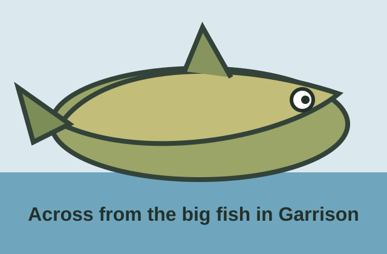

Food Shelf
Food support is available for households in the Garrison area, with groceries and household staples shared as available.
Learn about the Food ShelfNeighbors helping neighbors
A community organization serving neighbors in difficult life circumstances by building a strong network of local volunteers.

Landmark: Garrison walleye statueWe are right across the road from the big Garrison walleye statue.
Food, clothing, volunteer service, and community donations all work together through Dorothy's Rainbow.
Food support is available for households in the Garrison area, with groceries and household staples shared as available.
Learn about the Food ShelfShop affordable clothing, household goods, books, seasonal items, and more while supporting local care.
Visit the Thrift Store pageUse Signup.com to choose volunteer times for Dorothy's Rainbow Food Shelf or Dorothy's Rainbow Thrift Store.
Open volunteer signups